Introduction to linguistics — Course Website — 19 January 2026
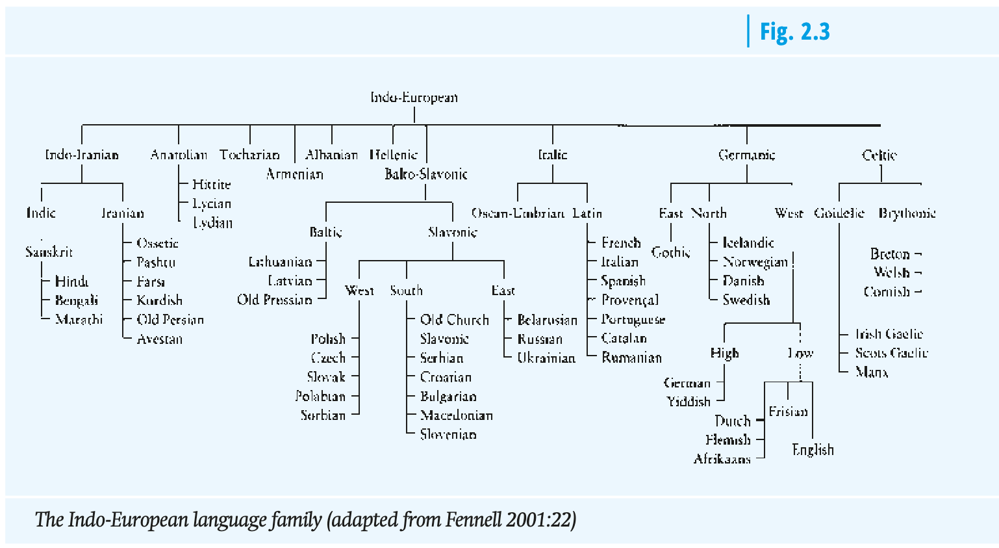
Bieswanger and Becker (2021): 17
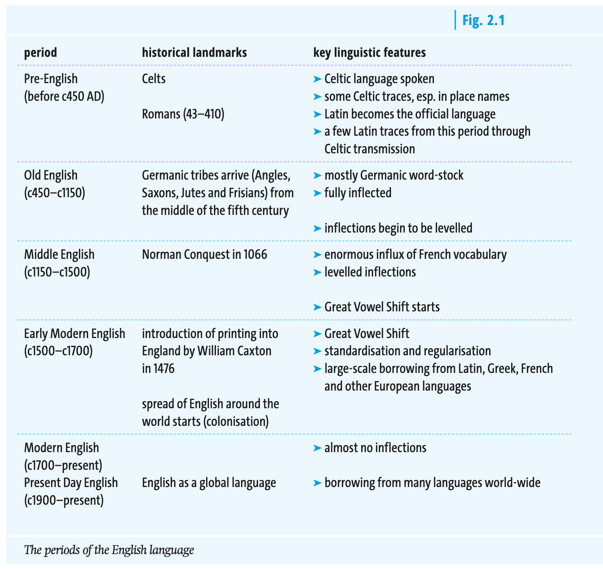
Bieswanger and Becker (2021): 13
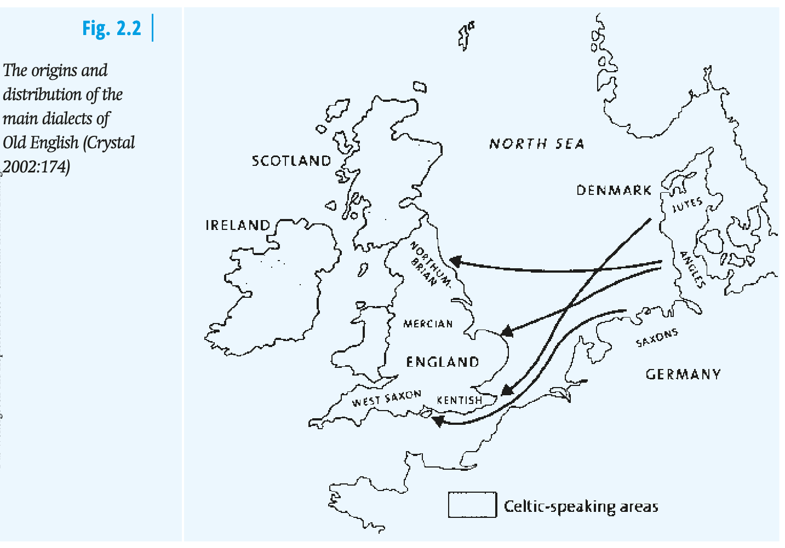
Bieswanger and Becker (2021): 16
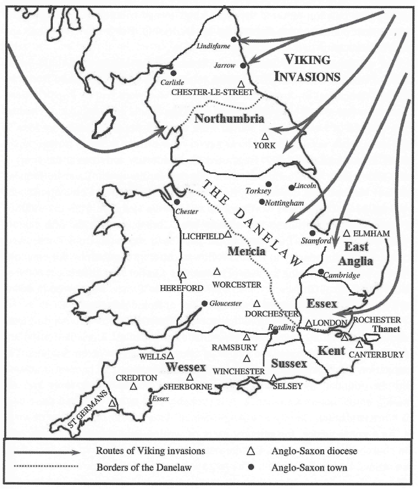
Kohnen (2014)
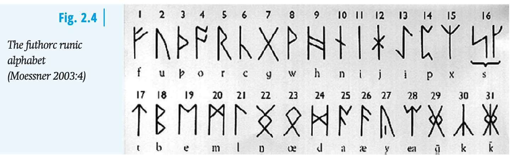
Bieswanger and Becker (2021): 18
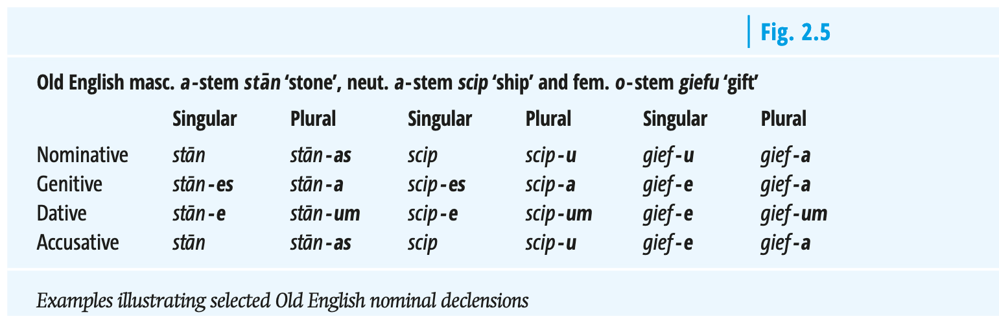
Bieswanger and Becker (2021): 18
Sound example:
Elements that survived from OE are basic elements of the vocabulary and are very frequent: pronouns, conjunctions, auxiliary verbs etc.
Fundamental concepts:
Consequence: English drifts apart from West Germanic languages, e.g. German
Traces of linguistic contact situations can be found.
Superstrate influence: situation in which the language of a group of speakers in a socially or politically superior position influences that of the speakers in an inferior position (Herbst 2010, 316).
leisure/arts: art, beauty, chess, colour, dance, falcon, image, leisure, literature, melody, music, painting, pen, poet, preface, prose, recreation, rhyme, romance, sculpture, story, tragedy, volume
science: anatomy, calendar, gender, geometry, grammar, logic, medicine, metal, noun, pain, physician, poison, square, study
general nouns: action, adventure, age, air, city, comfort, courage, debt, envy, error, face, flower, hour, joy, labour, marriage, mountain, number, opinion, order, people, person, poverty, power, river, sign, unity, vision
general adjectives: active, blue, calm, certain, clear, cruel, curious, eager, easy, final, foreign, gentle, honest, horrible, large, natural, nice, perfect, poor, real, rude, safe, second, simple, single, special, sure
general verbs: advise, allow, carry, change, close, continue, cry, enjoy, enter, inform, join, marry, move, obey, pass, prefer, prove, quit, receive, refuse, remember, satisfy, save, serve, suppose, trip
| Mund | mündlich |
| Heiliger | heilig |
| Fuß | Fußgänger |
| Wort | wörtlich |
| Buch | Buchstabe |
| mouth | oral |
| saint | holy |
| foot | pedestrian |
| word | verbal |
| book | letter |
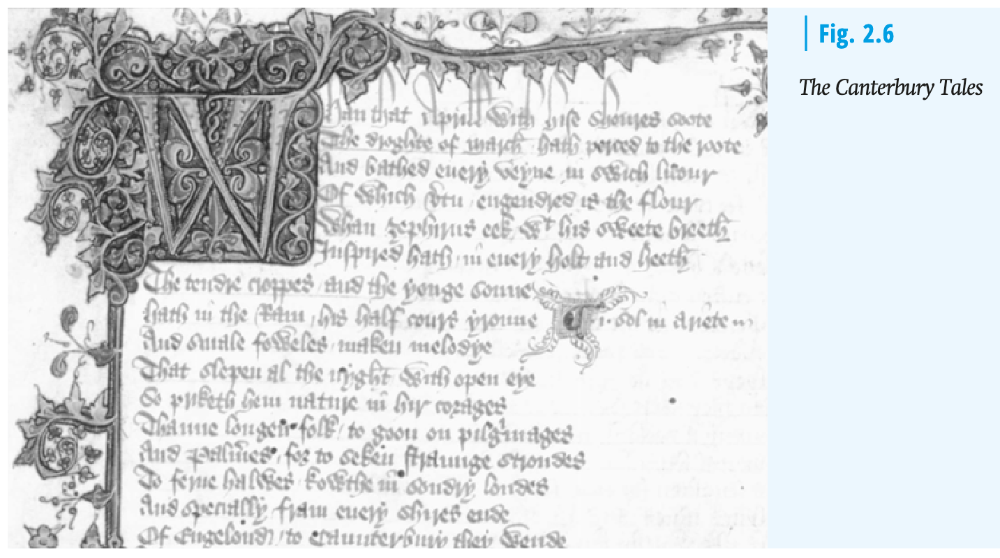
Bieswanger and Becker (2021): 21
Read the following newspaper article and spot the loanwords.
Romance/Latin — Greek — other/uncertain
Scottish whale watchers’ photos used to gain insights into animals’ habits.
Images taken by public reveal insights into threatened minke whales, including finding the most attention-seeking whale
Snowy is the oldest known minke whale in Europe, while Knobble appears to adore attention – or, at least, the whale has been spotted more than 60 times since 2002, mostly close to the Isle of Mull. Photographic records of minke whales submitted by members of the public are being published in a digital catalogue, providing insights about the threatened species. The research, collated by the Hebridean Whale and Dolphin Trust, reveals that more than 300 individual minke whales have been identified in the Hebrides since 1990. A third (33%) have been seen more than once. “Photographs are a powerful tool for strengthening our understanding of whale movements and the threats they face – providing vital evidence for effective conservation,” said Dr Lauren Hartny-Mills, science and conservation manager for the Hebridean Whale and Dolphin Trust. […]
Scottish whale watchers’ photos used to gain insights into animals’ habits.
Images taken by public reveal insights into threatened minke whales, including finding the most attention-seeking whale
Snowy is the oldest known minke whale in Europe, while Knobble appears to adore attention – or, at least, the whale has been spotted more than 60 times since 2002, mostly close to the Isle of Mull. Photographic records of minke whales submitted by members of the public are being published in a digital catalogue, providing insights about the threatened species. The research, collated by the Hebridean Whale and Dolphin Trust, reveals that more than 300 individual minke whales have been identified in the Hebrides since 1990. A third (33%) have been seen more than once. “Photographs are a powerful tool for strengthening our understanding of whale movements and the threats they face – providing vital evidence for effective conservation,” said Dr Lauren Hartny-Mills, science and conservation manager for the Hebridean Whale and Dolphin Trust. […]
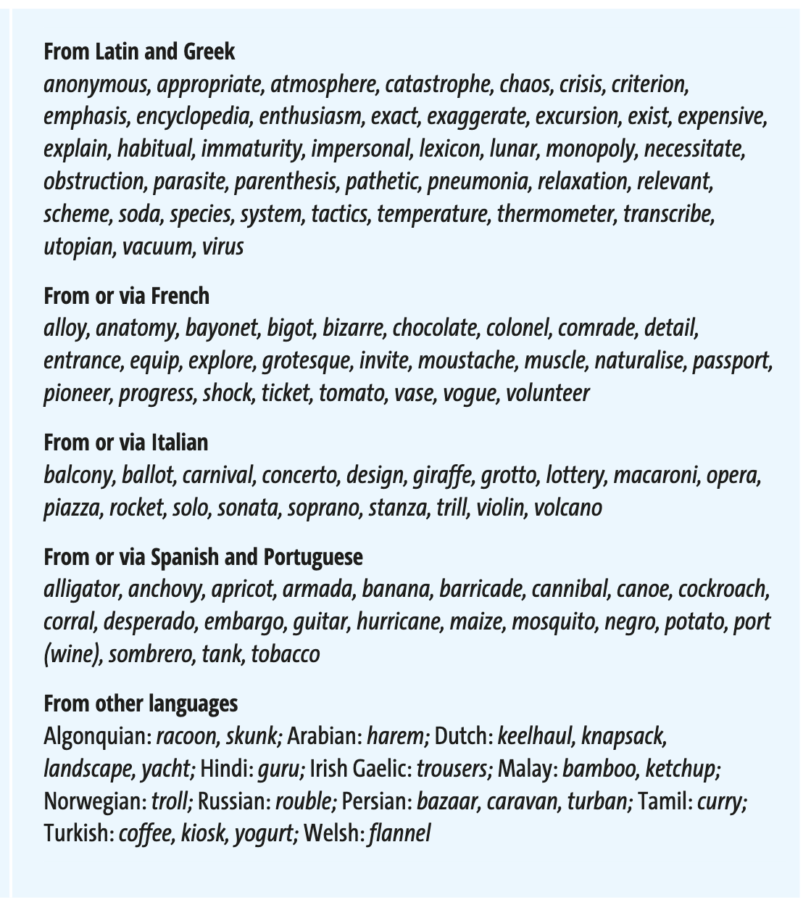
Bieswanger and Becker (2021): 26
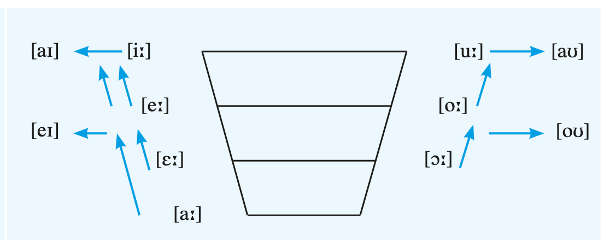
Bieswanger and Becker (2021): 28
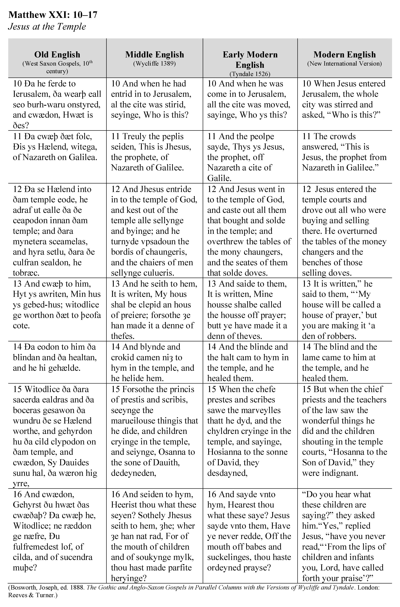
Parallel illustrations of Matthew XXI: 10–17, Jesus at the Temple
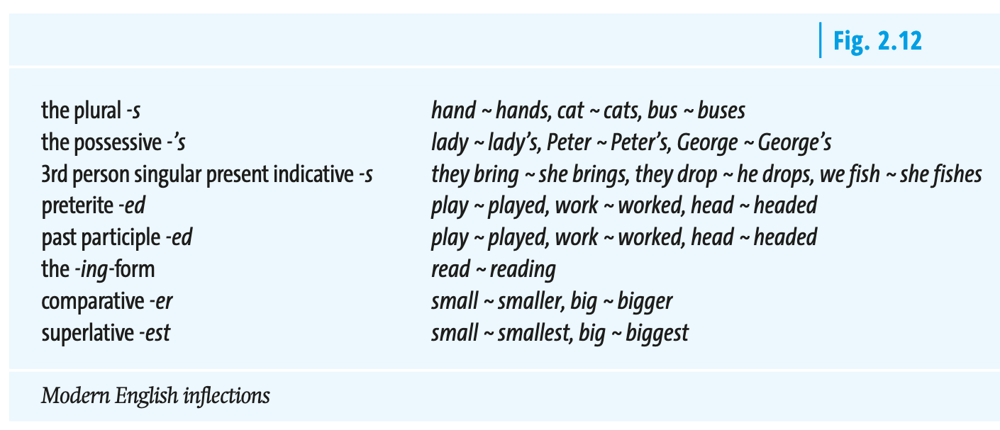
Bieswanger and Becker (2021): 29
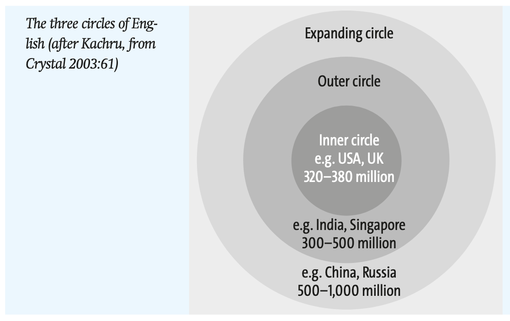
Bieswanger and Becker (2021): 35